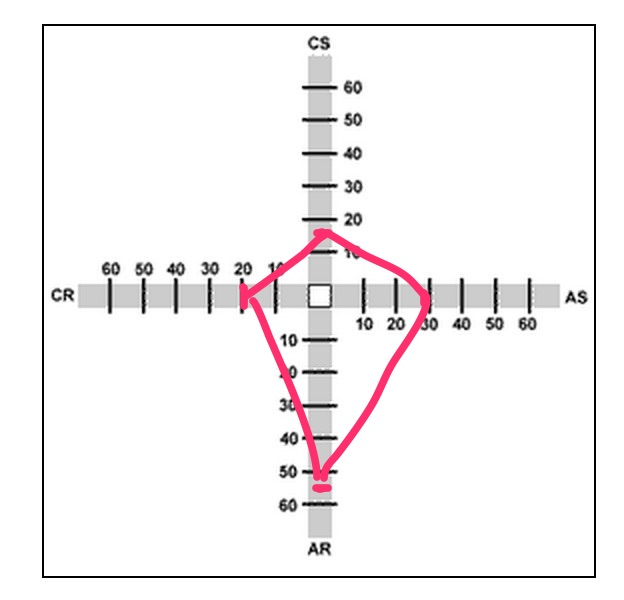

Personal Thinking Style
Phase 0 Unit 1 Week 3 | Cultural Blog #3
Early in Phase 0, we were all asked to go through a series of personal learning and thinking style websites and take the quizzes to establish our own results. The Gregorc thinking styles approach was one such analysis we completed. My results were skewed in the direction of Abstract Random thought. My secondary strength scored in Abstract Sequential. Some of the descriptors for Abstract Random thinking do seem to fit me; for example, I do like harmony and healthy relationships, and find having to explain feelings challenging (writing is difficult for me for this reason, I have trouble explaining things in general). I also do indeed find concentrating on one thing at a time difficult and giving exact details.
However, of the four styles described on the website, I most identified with the Concrete Random results the most, even though I scored the lowest in this range on the quiz. Perhaps I took the test incorrectly or should take it again. However, there were many more points that resonated with me from Concrete Random than any others. In particular, I fit the following points:
- The learner likes:
- Experimenting to find answers
- Using intuition
- Solving problems independently
- They learn best when:
- Able to use trial-and-error
- Given opportunity to work through problems by themselves
- Hard for them:
- Formal reports
- Re-doing anything once it's done
- Keeping detailed records
I diverge from the description in terms of wanting competition, and disliking limitations, showing my work, or having no options. I'm generally ambivalent on all of those points. Overall though, I do think I'm more in the Concrete Random/Abstract Random plains of thought than anything else.
I can see how these styles of thinking can related to the challenges I have faced in P0 so far. One of the harder times I have is with planning pair sessions. Like Concrete Random thinkers, I prefer to work through difficult problems independently. I find that even when I do pair, I strongly prefer to do it remotely than in person. It was easier for me when we had a person in our group who was very extroverted and always planned pair sessions for us, but unfortunately she has left the program and I am missing her! I have now asked my accountability group to help me stay on track with pairing requirement and to give me reminders to schedule sessions.
Another topic we were asked to consider was fixed vs growth mindsets. The description of this dichotomy implies that individuals have one or the other:
{kind=link}
Out of these two mindsets, which we manifest from a very early age, springs a great deal of our behaviorBut I think that I have at times parts of both. I admittedly know that I like to appear smart, but I also love to learn, am not afraid to show my ignorance, and will change previously held views when given evidence against them. As a younger girl, I often gave up when faced with obstacles or immense effort, which is actually a very common learned trait among women. I also do learn from criticism and am delighted when others succeed. I think that we as people can often have both of these mindsets over time or in differing situations, and we can be aware of that and work towards keeping a growth mindset.